Envariabelanalys
Gränsvärden
Kontinuitet
En funktion f är kontinuerlig om den "hänger ihop".
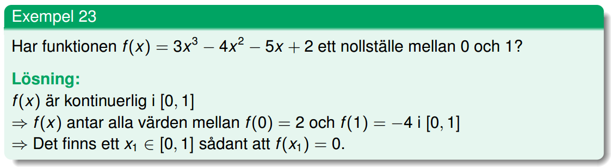
Derivata
Derivatans definition
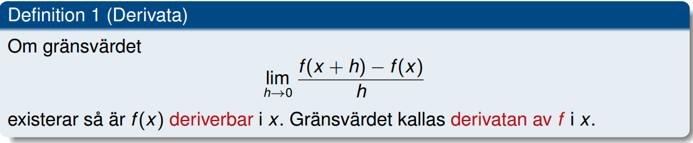Implicit derivering
Om y är jobbigt att lösa ut ur en ekvation (som i x³ - y³ - xy - x = 2) så kan man se y som en funktion av x och derivera med avseende på x, för att senare lösa ut y'.
Medelvärdessatsen
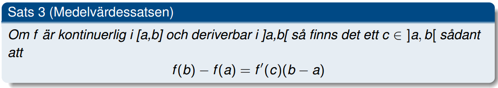Primitiva funktioner
Partiell integration
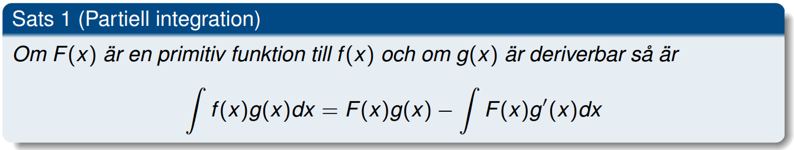Variabelsubstitution
Exempel
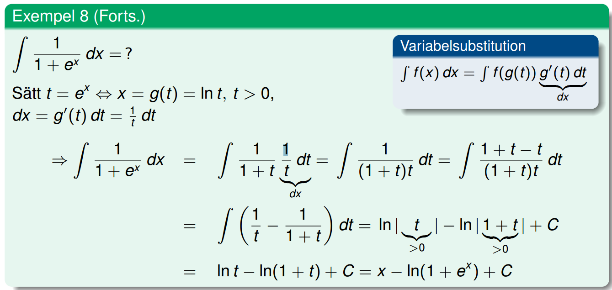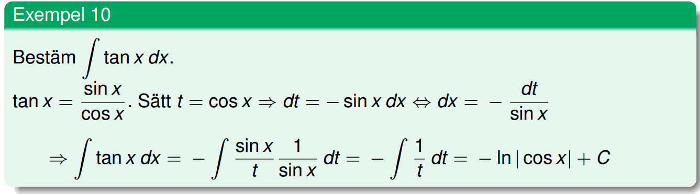PBU (partialbråksuppdelning)
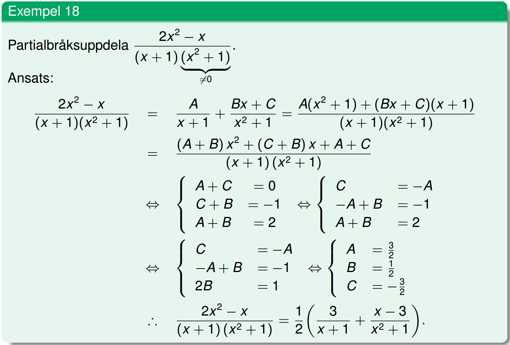Integration av rationella funktioner
1. Gör polynomdivision om grad(T) > grad(N), faktorisera nämnare.
2. PBU (om det behövs).
3. Integrera!
Integraler
Integralkalkylens medelvärdessats
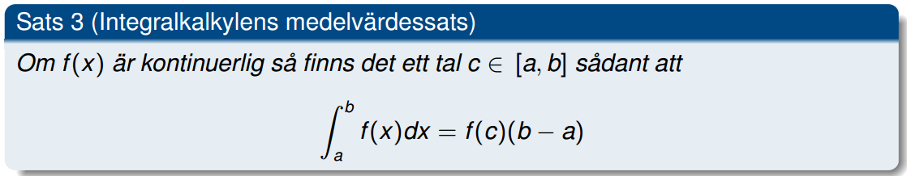
Exempel
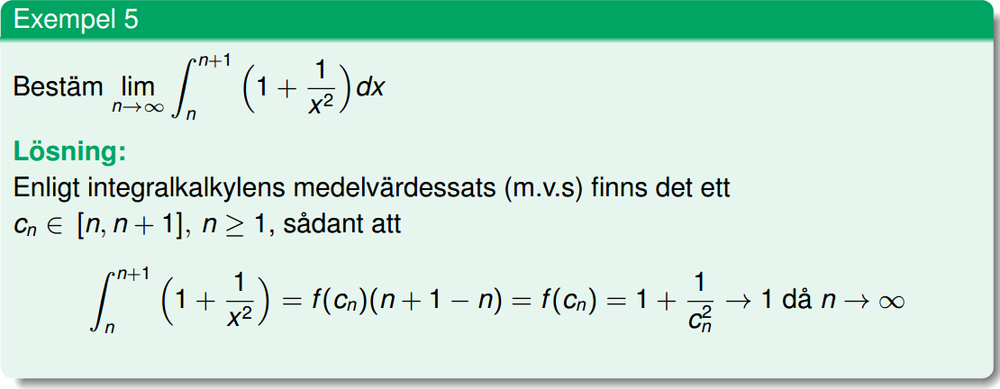Generaliserade integraler
En integral är generaliserad om gränserna på integralen ger upphov till problem som inte kan lösas direkt med simpel aritmetik, så som obegränsat intervall, division med noll etc.
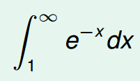
Om gränsvärdet existerar för en generaliserad integral så kallas den konvergent, annars divergent.
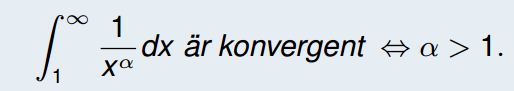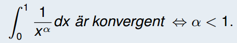
Om en generaliserad integrals alla uppdelningar (som är generaliserade på endast ett sätt) är konvergenta så är integralen konvergent. ∴ Om en enda uppdelning är divergent så är hela integralen divergent.
Exempel
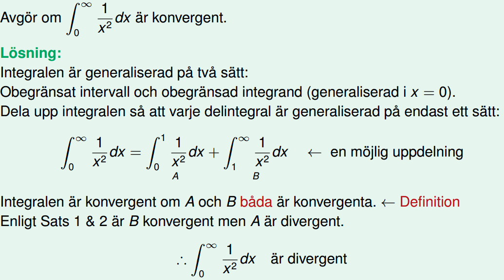Instängningssatsen
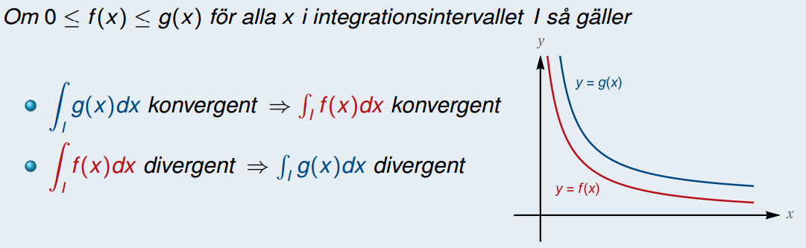
Med hjälp av instängningssatsen så kan man bestämma konvergensen på en funktion genom att "uppskatta" den och hitta större/mindre funktioner som konvergensen lätt kan bestämmas på. Se exempel.
Exempel
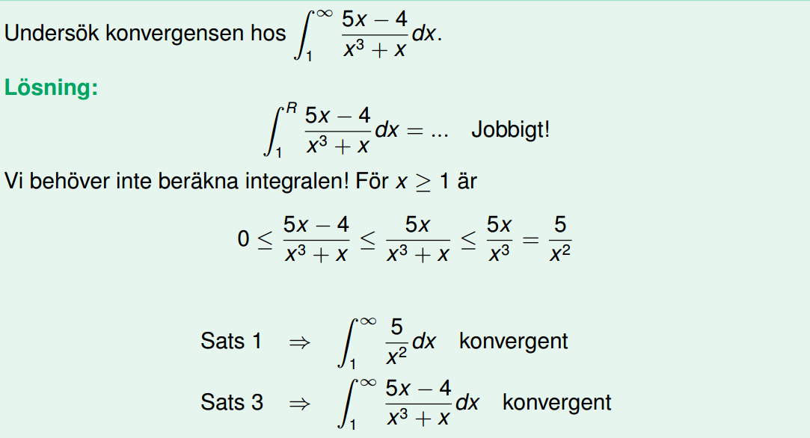Båglängd
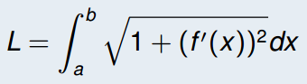Rotationsvolymer
Rotation kring x:
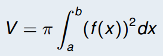
Rotation kring y:
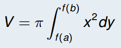
Simpsons formel

Differentialekvationer
Linjära differentialekvationer
Ekvationer av typen y' + g(x)y = h(x) löses genom att multiplicera ekvationen med den integrerande faktorn (som är eG(x), G'(x) = g(x)), då vänsterledet kan skrivas om till D(y*G(x)). Integrera båda leden och lös ut y.
Seperabla differentialekvationer
Ekvationer av typen g(y)y' = h(x) löses genom att konstatera y' = dy/dx, multiplicera med dx i båda led och integrera. ∴ ∫g(y)dy = ∫h(x)dx
Homogena linjära differentialekvationer med konstanta koefficienter
Ekvationer av typen y'' + a1y' + a0y = 0.
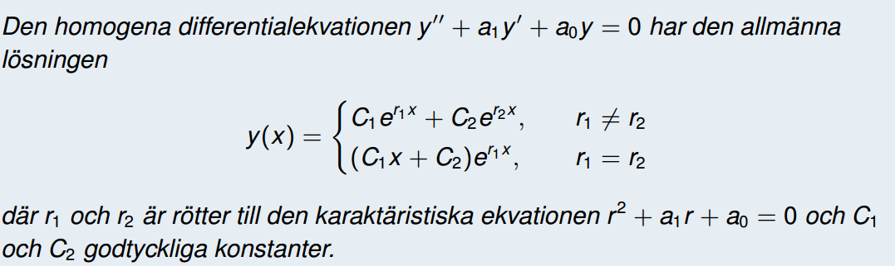
Om det inte står 0 i HL så krävs en partikulärlösning till ekvationen. Dessa löses med hjälpfunktionen z(x).


Om HL är en summa så kan man hitta en partikulärlösning till varje term och sedan summera dessa.
∴ yp = yp1 + yp2
Utvecklingar
Taylors formel
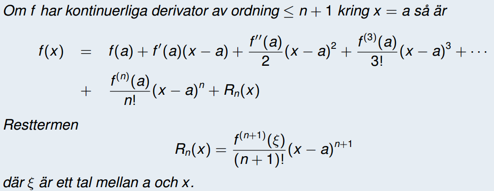Maclaurins formel
Maclaurins formel är ett specialfall av taylors formel med a = 0.
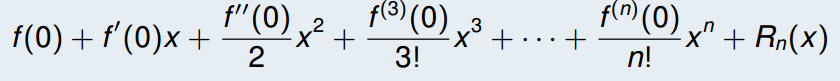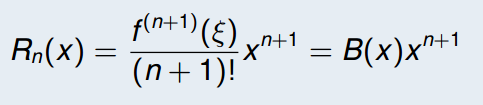
Formeln gäller så länge x → 0.
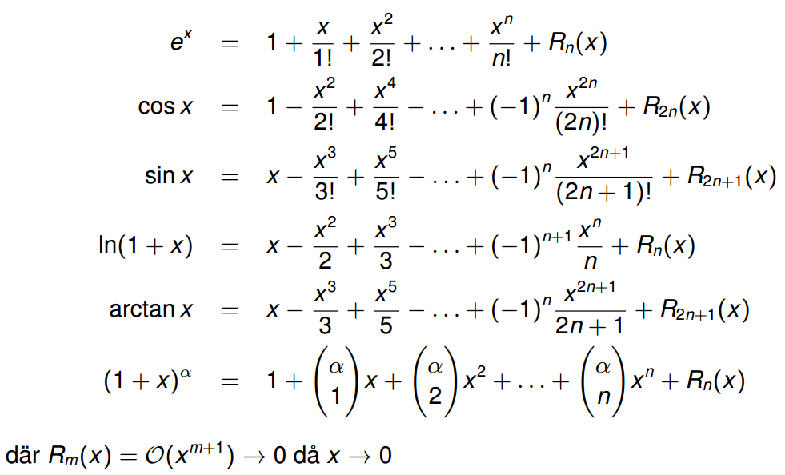
Hindgren har sagt att man aldrig kommer behöva utveckla längre än till ordning 4 på tentan.
Ordo
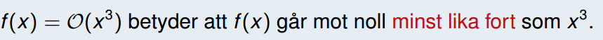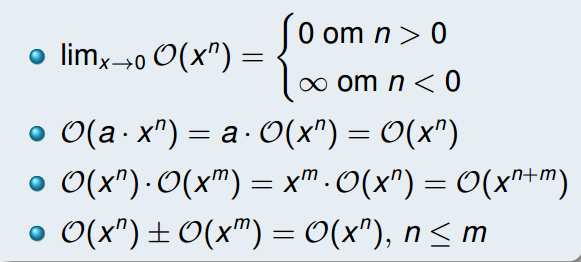